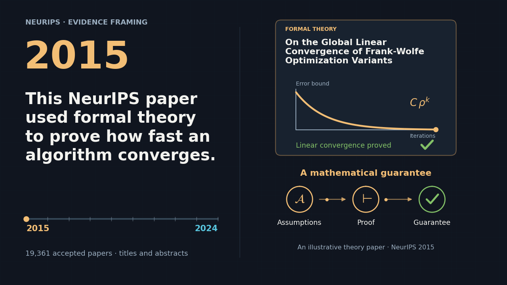

Auditing Evidence Framing at NeurIPS: A Decade-Scale Study of Accepted Papers

Animation sources and downloads
The profiles show annual mean framing on a fixed shared scale. Movement between years is interpolated. The two paper examples illustrate contrasting framing; they are not representative of their years.
Examples: On the Global Linear Convergence of Frank-Wolfe Optimization Variants (2015) and The FineWeb Datasets (2024).


NeurIPS’s evidence framing shifted away from formal theory toward resources and benchmarks.
Move the year slider to compare each annual profile with 2015.
Find your paper
Select a paper to see it over its publication-year average.
This paper is outside your current search.
No matching paper. Try another title or author.
Paper galaxy
How this map is made
The projection preserves some local neighborhoods and distorts others. Gaps, cluster sizes and distances across the map are not measurements of scientific categories or research quality. In each view, all years share one map; filtering a year leaves positions fixed. Projection details
Methods and sources
These noisy measurements describe how accepted papers’ titles and abstracts frame evidence. They do not measure research quality, correctness, or novelty, and should not be used to judge papers or authors. Annual patterns partly reflect changes in topics and tracks.
Every spoke uses the same standardized scale within a chart. Yearly means use a tighter range to make changes visible. Paper profiles use one fixed shared range covering all papers, without clipping or rescaling when a paper is selected. The dashed ring marks the full-corpus average; the center is not zero, and polygon area is not an overall score.
Titles and authors are bibliographic metadata; abstract text is not redistributed. Code: MIT. Derived measurements: CC BY 4.0. Full aggregate analysis.